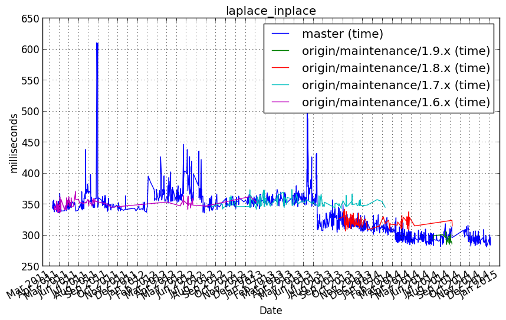
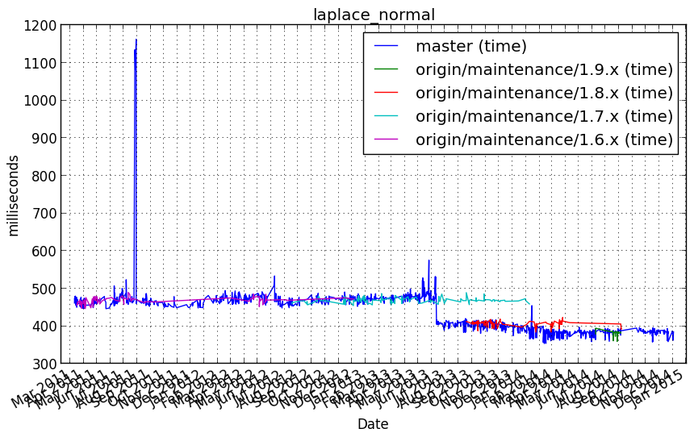
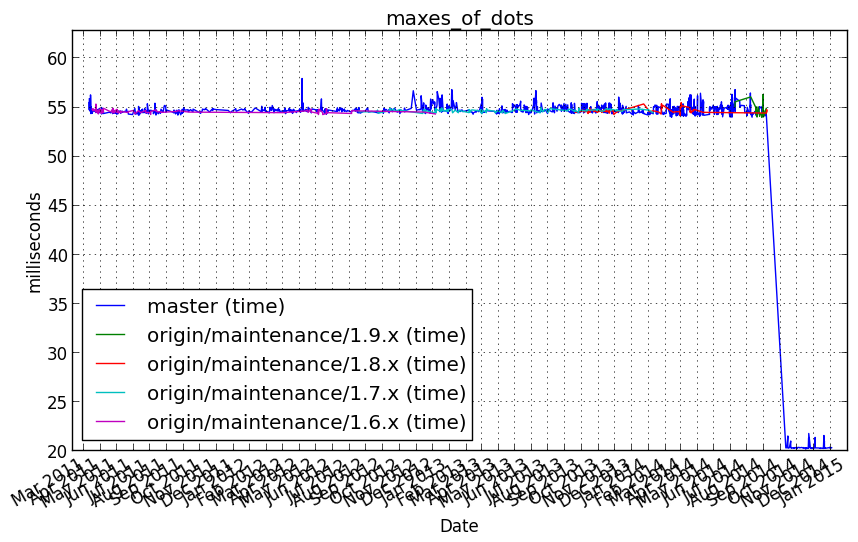

vb_app¶
laplace_inplace¶
Benchmark setup
import numpy as np
N = 150
Niter = 1000
dx = 0.1
dy = 0.1
dx2 = dx*dx
dy2 = dy*dy
def num_update(u, dx2, dy2):
u[1:-1,1:-1] = ((u[2:,1:-1]+u[:-2,1:-1])*dy2 +
(u[1:-1,2:] + u[1:-1,:-2])*dx2) / (2*(dx2+dy2))
def num_inplace(u, dx2, dy2):
tmp = u[:-2,1:-1].copy()
np.add(tmp, u[2:,1:-1], out=tmp)
np.multiply(tmp, dy2, out=tmp)
tmp2 = u[1:-1,2:].copy()
np.add(tmp2, u[1:-1,:-2], out=tmp2)
np.multiply(tmp2, dx2, out=tmp2)
np.add(tmp, tmp2, out=tmp)
np.multiply(tmp, 1./(2.*(dx2+dy2)), out=u[1:-1,1:-1])
def laplace(N, Niter=100, func=num_update, args=()):
u = np.zeros([N, N], order='C')
u[0] = 1
for i in range(Niter):
func(u,*args)
return u
Benchmark statement
laplace(N, Niter, func=num_inplace, args=(dx2, dy2))
Performance graph
laplace_normal¶
Benchmark setup
import numpy as np
N = 150
Niter = 1000
dx = 0.1
dy = 0.1
dx2 = dx*dx
dy2 = dy*dy
def num_update(u, dx2, dy2):
u[1:-1,1:-1] = ((u[2:,1:-1]+u[:-2,1:-1])*dy2 +
(u[1:-1,2:] + u[1:-1,:-2])*dx2) / (2*(dx2+dy2))
def num_inplace(u, dx2, dy2):
tmp = u[:-2,1:-1].copy()
np.add(tmp, u[2:,1:-1], out=tmp)
np.multiply(tmp, dy2, out=tmp)
tmp2 = u[1:-1,2:].copy()
np.add(tmp2, u[1:-1,:-2], out=tmp2)
np.multiply(tmp2, dx2, out=tmp2)
np.add(tmp, tmp2, out=tmp)
np.multiply(tmp, 1./(2.*(dx2+dy2)), out=u[1:-1,1:-1])
def laplace(N, Niter=100, func=num_update, args=()):
u = np.zeros([N, N], order='C')
u[0] = 1
for i in range(Niter):
func(u,*args)
return u
Benchmark statement
laplace(N, Niter, func=num_update, args=(dx2, dy2))
Performance graph
maxes_of_dots¶
Benchmark setup
import numpy as np
np.random.seed(1)
nsubj = 5
nfeat = 100
ntime = 200
arrays = [np.random.normal(size=(ntime, nfeat)) for i in xrange(nsubj)]
def maxes_of_dots(arrays):
"""
A magical feature score for each feature in each dataset
:ref:`Haxby et al., Neuron (2011) <HGC+11>`.
If arrays are column-wise zscore-d before computation it
results in characterizing each column in each array with
sum of maximal correlations of that column with columns
in other arrays.
Arrays must agree only on the first dimension.
For numpy it a join benchmark of dot products and max()
on a set of arrays.
"""
feature_scores = [ 0 ] * len(arrays)
for i, sd in enumerate(arrays):
for j, sd2 in enumerate(arrays[i+1:]):
corr_temp = np.dot(sd.T, sd2)
feature_scores[i] += np.max(corr_temp, axis = 1)
feature_scores[j+i+1] += np.max(corr_temp, axis = 0)
return feature_scores
Benchmark statement
maxes_of_dots(arrays)
Performance graph
